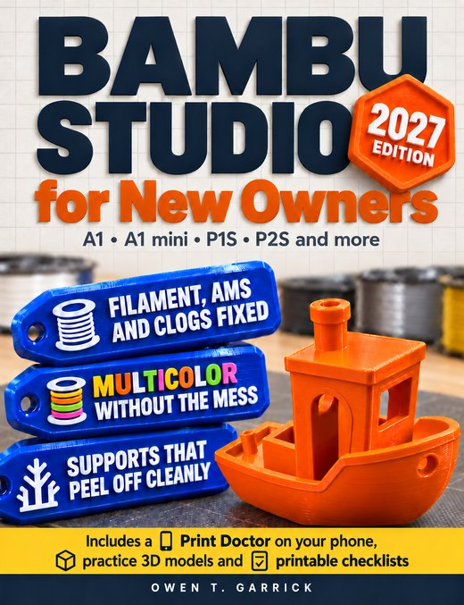

Reader bonus
Thank you for choosing this book
Four extras built from the book are waiting for you. They take two short steps to unlock.
Get my bonuses- Print Doctor on your phoneTap what you see on a failed print and follow the suspects in the book's order.
- Practice 3D modelsFirst-layer, stringing, overhang, bridge and support tests, ready to slice.
- Maintenance remindersThe Chapter 13 tasks for your printer, added to your phone's calendar.
- Printable checklistsFive US Letter sheets to keep next to the printer.